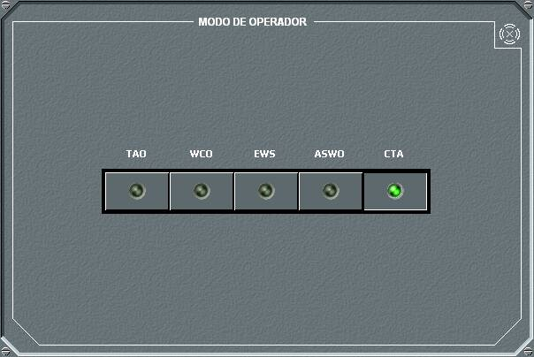
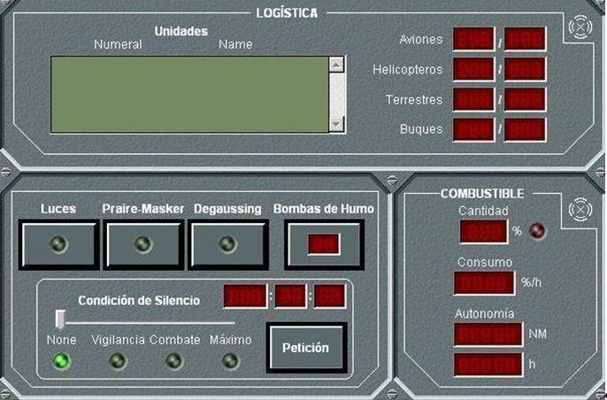
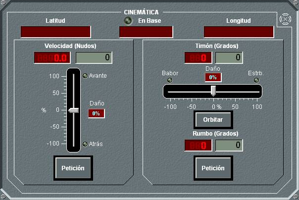
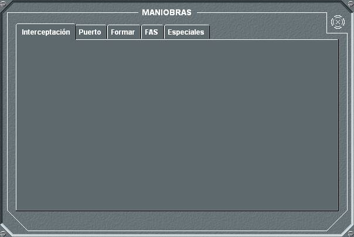
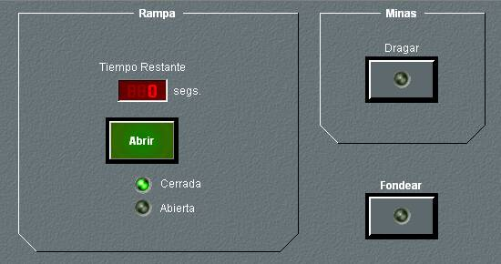

Dinámica de Superficies
Operador

Mediante este panel de detalle, el operador puede cambiar el Modo de Trabajo de la Consola en la unidad propia entre los siguientes: TAO, WCO, EWS, ASWO y CTA.
Logística / Miscelánea / Combustible

Este panel de detalle agrupa las siguientes funciones:
- Logística Presenta una lista de las unidades que están alojadas en la unidad propia. La posibilidad de portar unidades sólo está disponible si la unidad se ha definido con capacidad de portar aviones, helicópteros, buques(*) o unidades terrestres.
- Combustible: Muestra el valor del nivel de combustible en tanto por ciento respecto del nivel máximo, incluyendo un led que indica cuando entra en reserva, el consumo horario y la autonomía de la unidad en millas y horas a la velocidad actual.
- Misceláneos: Permite realizar las siguientes acciones:
- Encender y apagar las luces de navegación.
- Activar y desactivar las funciones de Prairé-Masker (Reducción del nivel de ruido radiado en bandas ancha y estrecha) y Degaussing (Reducción del magnetismo). Estas funciones sólo están disponibles en las unidades en las que se haya definido estas capacidades.
- Lanzar Bombas de Humo, y consultar la cantidad remanente en pañol.
- Establecer la condición de silencio entre cuatro posibles (Ninguno, Vigilancia, Combate y Máximo). Al elegir una condición, usando la barra deslizante, y pulsar el botón Petición, se inicia una cuenta atrás de tiempo predeterminado para cada unidad para hacer efectivo el cambio.
Estas funciones sólo están disponibles cuando la unidad se encuentra fuera de Base.
(*) Capacidad para portar buques no disponible en todas las versiones del Simulador.
Cinemática

En este panel se muestra la situación de la unidad propia y la base en la que se encuentra, en el caso de que estuviera en una, así como el rumbo, el ángulo del timón y la velocidad. También se muestra el nivel de daño que afecta al Timón y a la Velocidad.
Este panel permite realizar las siguientes maniobras:
- Cambio de rumbo mediante orden de rumbo a seguir: Introduciendo los valores deseados de rumbo, y de ángulo de timón en los campos correspondientes, al pulsar el botón Petición del área correspondiente el buque comienza a virar, teniendo en cuenta el ángulo de timón introducido y las características del buque (tabla de giro) hasta que alcanza el rumbo pedido. A partir de este momento, el buque navega a rumbo constante, respecto al agua, hasta que se ordene otra maniobra.
- Cambio de rumbo mediante orden de timón: Introduciendo un ángulo de timón en el campo correspondiente, al pulsar el botón Orbitar, el buque comenzará a virar, teniendo en cuenta el ángulo de timón introducido y las características del buque (tabla de giro), de forma continua hasta que se introduzca un valor cero de ángulo de timón, o hasta que se realice una petición de rumbo, en cuyo caso el ángulo de timón se pone automáticamente a cero cuando se alcanza el rumbo pedido.
- Ambas peticiones de cambio de rumbo no serán atendidas si se da alguna de las siguientes condiciones:
- La unidad está en Base
- La unidad está realizando alguna maniobra incompatible con el cambio de rumbo.
- El timón está destruido o la unidad ha agotado su combustible.
- Cambio de velocidad: Introduciendo el valor de velocidad deseado en el campo correspondiente, al pulsar el botón Petición, el buque comenzará a variar su velocidad, de acuerdo con sus características (tabla de aceleración), hasta alcanzar la velocidad respecto al agua deseada. Esta petición no se atenderá si se da alguna de las siguientes condiciones:
- La unidad está en Base
- La unidad está realizando alguna maniobra incompatible con el cambio de velocidad.
- La maquinaria está destruída o la unidad ha agotado su combustible.
La velocidad y el timón solicitados pueden ser introducidos como un tanto por ciento del máximo de la unidad mediante las barras deslizantes.
Maniobras

El panel de detalle de la opción Maniobras presenta cinco solapas en las que se puede elegir una de las siguientes maniobras.
Interceptación: En el panel de detalle de Interceptación se permite la introducción de todos los datos necesarios para calcular la maniobra de interceptación entre una unidad origen (que puede ser la propia o la que esté en Marca en la pantalla táctica) y una unidad objetivo.

Al pulsar el botón Unidad Propia o P. Marca, se toma como unidad origen la unidad propia o la que esté en Marca, respectivamente. Los datos de rumbo, velocidad, demora y distancia se adquieren automáticamente.
Al pulsar el botón Blanco, se toma como unidad objetivo la que esté en Hook en la pantalla táctica, o bien su posición en el caso de que el Hook no esté sobre ninguna unidad. Los datos de rumbo, velocidad, demora y distancia se adquieren automáticamente.
Al pulsar el botón Calcular, se calcula la interceptación, y si tiene solución, se proporciona el tiempo que tomaría la maniobra y el rumbo que debería tomar la unidad origen. Además, en la pantalla táctica se dibuja un esquema de la maniobra, presentando el punto de interceptación calculado.
Si la unidad propia se ha seleccionado como origen, se puede ejecutar automáticamente la maniobra de interceptación, pulsando el botón Interceptar cuando existe solución.
Puerto: Esta maniobra se utiliza para zarpar y retornar a las unidades base. En la lista se muestran las unidades base del bando correspondiente, en el caso de que existan en el ejercicio unidades de superficie con capacidad para portar buques (*), estas unidades también aparecerán en la lista.
(*) Unidades con capacidad para portar buques no disponible en todas las versiones del Simulador.
A continuación se describe cómo se ejecuta cada una de estas maniobras.

- Para atracar en un puerto se elige una unidad base de la lista, se introduce una velocidad de retorno y se pulsa el botón Retorno. La unidad modificará automáticamente su rumbo, se dirigirá a la unidad elegida, a la velocidad solicitada, y atracará en ella. Esta petición no será atendida si se da alguna de las siguientes condiciones:
- La unidad está en Base
- La unidad está realizando alguna maniobra incompatible con esta.
- La maquinaria o el timón está destruidos o la unidad ha agotado su combustible.
- La maniobra no es cinemáticamente posible, o implica colisión.
- Cuando la unidad completa el atraque en la base, de forma automática se ejecutan las siguientes acciones:
- Se apagan todos los sensores.
- Se apagan todas las comunicaciones.
- Se inicia Maniobra de Reabastecimiento de la unidad.
- Para zarpar desde una base, se introduce el rumbo y la velocidad y se pulsa el botón Zarpar, que sustituye al botón Retorno cuando el buque está en base. Transcurrido un tiempo predeterminado, la unidad zarpará y tomará el rumbo y la velocidad solicitados. Para realizar esta maniobra, la unidad debe estar en Base, no tener destruidos la maquinaria ni el timón, y disponer de combustible.
Si durante la maniobra se pulsa de nuevo el botón Retorno (cuya leyenda se ha sustituido por Cancelar) se cancela la maniobra, quedando la unidad con el rumbo y velocidad que tiene en ese instante.
Las unidades que se muestran en la lista para poder seleccionarlas como base, son aquellas que tienen capacidad de portar buques, y que son del mismo bando que la unidad propia. Además, una unidad puede seleccionar con el Hook cualquier unidad que detecte por sus sensores, y de la que identifique su numeral, para solicitarla como base y entrar en ella.
Formar: Esta maniobra se utiliza para crear una formación con a varias unidades. A continuación se describen las acciones que pueden realizarse desde esta opción.

- Hacerse líder de una formación. Para ello se pulsa el botón Líder y a continuación el botón Formar. El indicador Led En Formación se encenderá en color verde. Esta petición no será atendida si la unidad está en Base.
- Integrarse en una formación. Para ello se selecciona un guía en la lista superior, en la que deben aparecer todas las unidades de superficie del mismo bando que se encuentren a menos de 20 millas (configurable en Galeon.ini), a continuación se introduce una demora o marcación y una distancia, seleccionando en la barra de desplazamiento la opción Demora o Marcación. Al pulsar el botón Formar, la unidad tratará de incorporarse a la formación navegando a la demora / marcación y distancia indicada respecto a la unidad guía. El indicador Led En Formación se encenderá en color amarillo durante el tiempo que la unidad tarde en alcanzar la demora y distancia indicadas, y pasará a color verde cuando lo haya conseguido. Esta petición no será atendida si se da alguna de las siguientes condiciones:
- La unidad está en Base
- La unidad está realizando alguna maniobra incompatible con esta.
- La maquinaria o el timón está destruidos o la unidad ha agotado su combustible.
Pulsando de nuevo el botón Formar (cuya leyenda se ha sustituido por Cancelar), se cancela la maniobra, manteniendo la unidad el rumbo y velocidad que tiene en ese instante.
Repostar / FAS: Esta maniobra se utiliza para repostar combustible desde la base en la que se encuentra o desde otra unidad, que debe tener esta capacidad.

- Cuando la unidad está en base, en este diálogo sólo se podrá seleccionar como unidad suministradora la unidad que actúa como base. Pulsando Repostar, se inicia el reabastecimiento de combustible. Pulsando de nuevo el botón Repostar, antes de que finalice el reabastecimiento, se cancelará la maniobra.
- Cuando la unidad no está en base, para repostar mientras navega desde otra unidad (maniobra FAS) se elige la unidad desde la que se quiere repostar en la lista y se pulsa el botón Repostar. La unidad se dirigirá hacia la unidad elegida, y cuando esté a la distancia apropiada navegará junto a él y realizará el reabastecimiento. Esta petición no será atendida si se da alguna de las siguientes condiciones:
- La unidad está en Base
- La unidad está realizando alguna maniobra incompatible con esta.
- La maquinaria o el timón está destruidos o la unidad ha agotado su combustible.
- La maniobra no es cinemáticamente posible.
Mientras la unidad se dirige hacia la unidad elegida para repostar, el botón Repostar permanece amarillo. Una vez que inicia el reabastecimiento, pasa a verde. Pulsando de nuevo el botón Repostar, antes de que finalice el reabastecimiento, se cancelará la maniobra y la unidad conservará el rumbo y la velocidad que tiene en ese instante.
Maniobras Especiales: Estas maniobras incluyen la Apertura / Cierre de Rampa, Fondeo y Neutralizar Minas. A continuación se describe cada una de ellas.

- Apertura / Cierre de Rampas: En operaciones de desembarco, y en buques que tengan habilitada esta capacidad, al pulsar el botón Abrir, se inicia una cuenta atrás de tiempo predeterminado para la unidad, tras la cual se produce la apertura de la rampa. Cuando la rampa está abierta, puede cerrarse al pulsar el botón Cerrar, que sustituye al botón Abrir en esta situación. Esta maniobra solo puede realizarse cuando la unidad esté fondeada.
- Fondear: Al pulsar el botón Fondear se produce el fondeo de la unidad. SI la unidad está fondeada, el led del botón permanece en verde encendido, y apagado en caso contrario. Esta petición no será atendida si se da alguna de las siguientes condiciones:
- La unidad está en Base
- La unidad está realizando alguna maniobra incompatible con esta.
- La sonda de fondeo no es superior al límite máximo definido para el simulador.
- Neutralizar Minas: Al pulsar el botón Minas, la unidad, si está habilitada para ello, intentará iniciar la maniobra de neutralizar minas. Si cuando esta maniobra es solicitada la unidad tiene una velocidad superior a la máxima de barrido de minas especificada en la base de datos, la unidad automáticamente solicitará un cambio de velocidad al valor límite. Una vez que alcance esta velocidad, inicia el barrido de minas. Mientras está reduciendo la velocidad, el led del botón se muestra amarillo encendido, mientras está neutralizando minas se muestra verde encendido, y apagado en cualquier otro caso. Esta petición no será atendida si se da alguna de las siguientes condiciones:
- La unidad está en Base
- La unidad está realizando alguna maniobra incompatible con esta.
Una vez fondeada la unidad, si se pulsa de nuevo el botón, se cancela la maniobra.
Al pulsar de nuevo este botón se cancela la maniobra, manteniendo la unidad la misma velocidad.
Los cambios en las condiciones cinemáticas y las maniobras que admiten las unidades cumplen la tabla de incompatibilidades especificada en Modelística – Plataformas – Maniobras – Incompatibilidad de Maniobras.